Factura Electrónica POS
La facturación electrónica de Costa Rica llevada al mostrador: emite tiquetes y facturas electrónicas desde el Punto de Venta de Odoo con envío a Hacienda en tiempo real, consulta del padrón al asignar cliente, pagos multimoneda, control por sucursales y cobro de facturas pendientes — sin salir de la caja.
Todos estos módulos operan dentro de la sesión del Punto de Venta (interfaz OWL/JS de Odoo). Se apoyan en el núcleo de Factura Electrónica Costa Rica para la firma y el envío a Hacienda.
Facturación electrónica en el Punto de Venta
El módulo central: convierte cada venta del POS en un comprobante electrónico válido. Genera Facturas Electrónicas (FE), Tiquetes Electrónicos (TE) y Notas de Crédito (NC), los firma y los envía a Hacienda en tiempo real, mostrando el estado sin interrumpir el flujo de la caja.
Resuelve además los casos propios del POS costarricense: usar el crédito de una NC como forma de pago, redistribuir los descuentos globales entre las líneas para cumplir la estructura v4.4, y seleccionar la actividad económica que corresponde a cada venta.
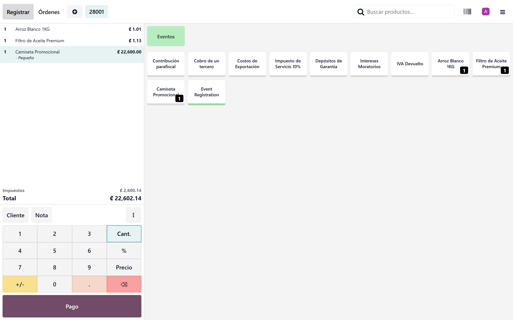
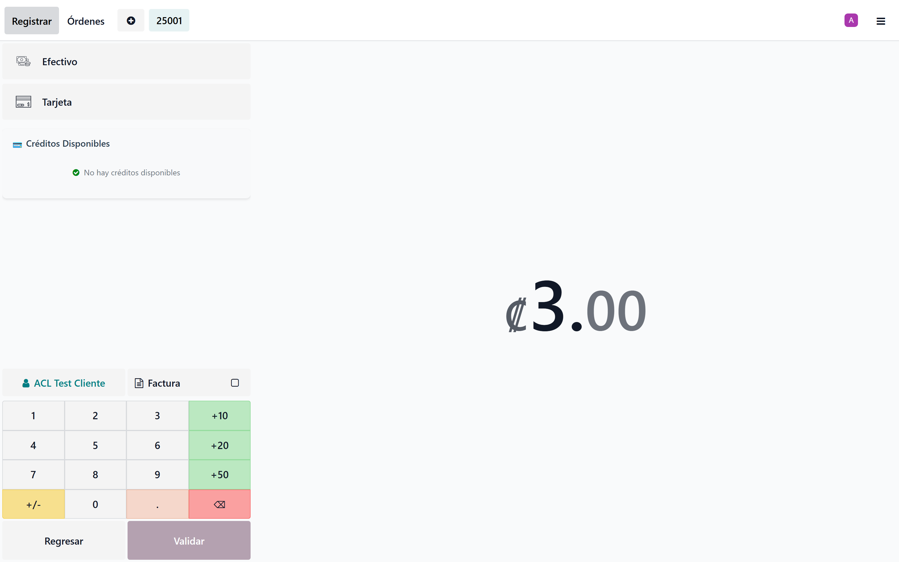
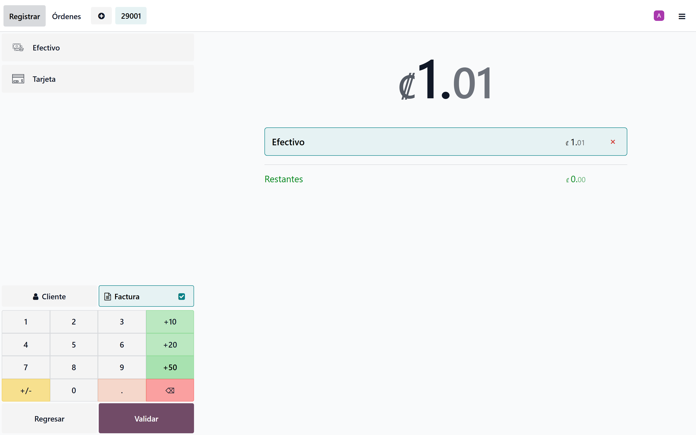
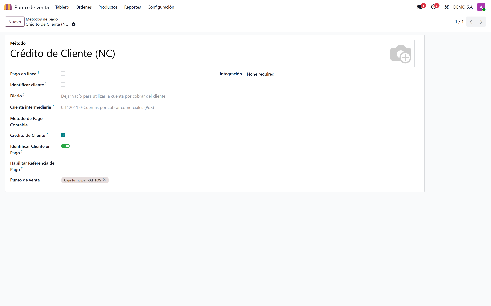
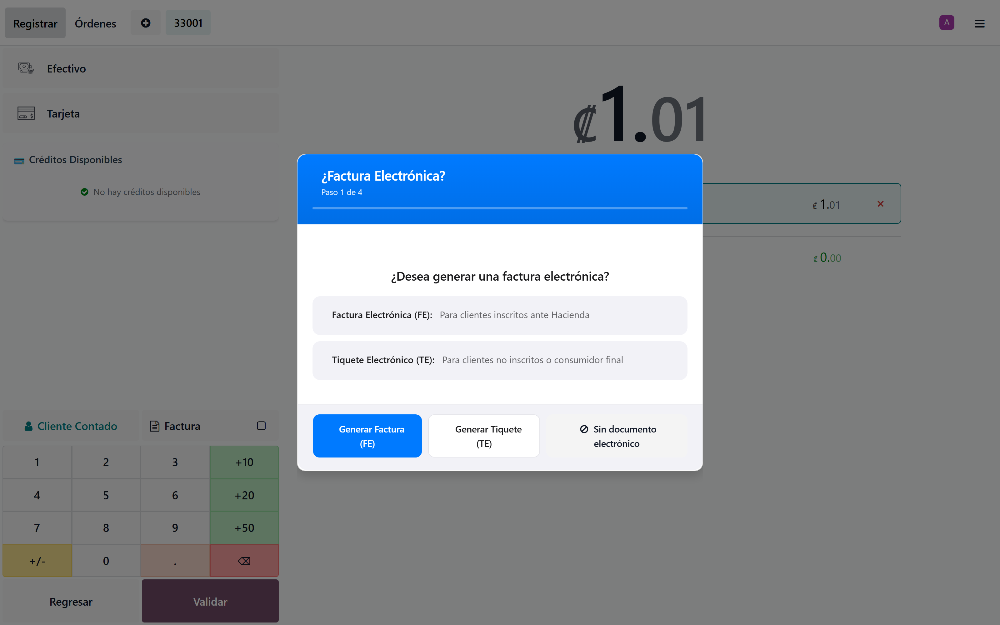
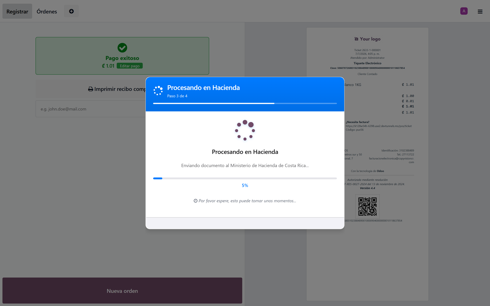
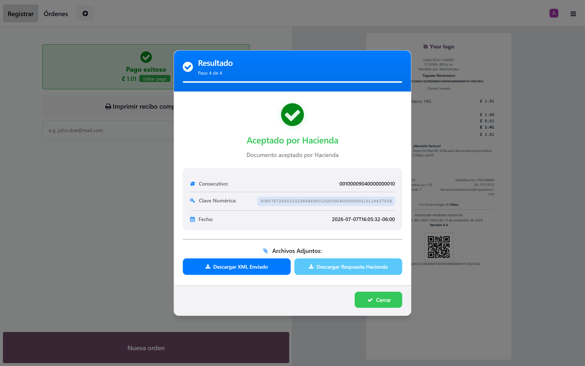
FE, TE y NC desde caja
El cajero emite factura, tiquete o nota de crédito electrónica directamente en la pantalla del POS.
Envío en tiempo real
Firma y transmisión a Hacienda al cerrar la orden, con el estado visible en el recibo.
NC como forma de pago
El crédito de una nota de crédito se aplica como medio de pago en una nueva venta.
Descuentos globales v4.4
Redistribuye el descuento global entre líneas para cumplir la estructura exigida por Hacienda.
Consulta a Hacienda dentro del POS
Módulo puente que lleva la consulta del padrón del Ministerio de Hacienda a la pantalla del Punto de Venta. Al asignar un cliente por su cédula, trae automáticamente su nombre y tipo de identificación para emitir la factura electrónica con los datos correctos.
Se instala automáticamente cuando conviven la consulta de Hacienda y el POS, sin configuración adicional.
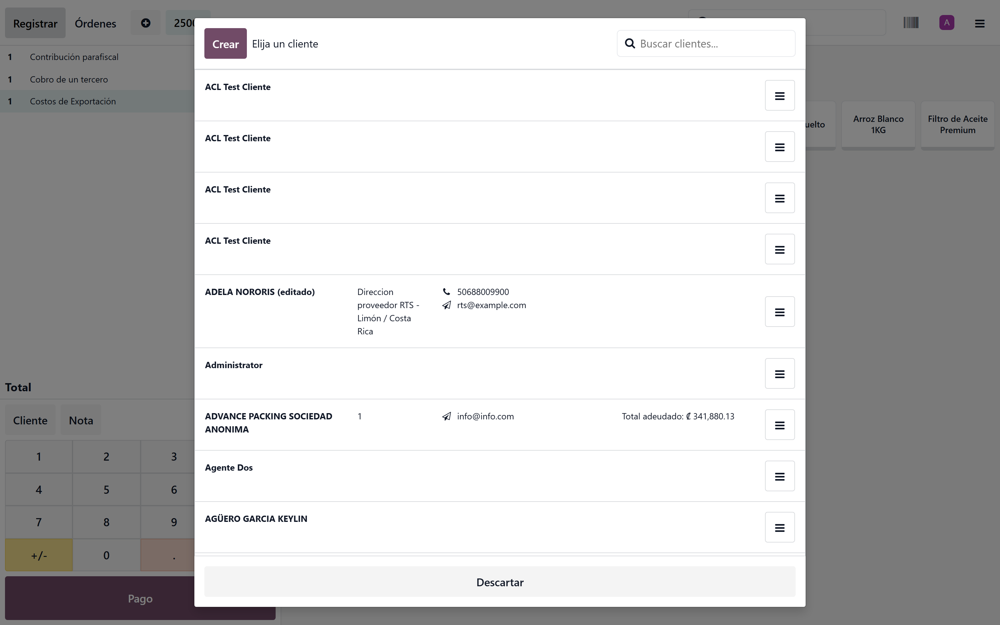
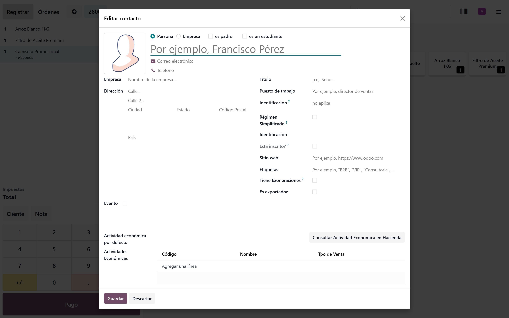
Padrón al instante
Digitás la cédula del cliente y el nombre llega desde Hacienda, sin salir de la caja.
Cliente correcto
Evita facturas rechazadas por nombre o identificación mal digitados en el mostrador.
Instalación automática
Se activa solo cuando el POS y la consulta de Hacienda están presentes.
Punto de Venta multimoneda
Por defecto Odoo maneja una sola moneda en el POS. Este módulo habilita listas de precios en distintas divisas: al elegir una lista con otra moneda, el precio y la moneda se ajustan automáticamente y el recibo puede imprimirse en la moneda de la venta.
Permite recibir pagos en diferentes monedas con su tipo de cambio, generar la factura electrónica multimoneda correspondiente y presentar reportes en varias divisas. Compatible con el POS de Odoo y con la identificación de cajero por empleado.
Listas de precio por moneda
Cambiar de lista ajusta precio y moneda automáticamente en pantalla.
Pagos en varias divisas
Recibe efectivo o tarjeta en distintas monedas con su tipo de cambio.
Recibos y FE multimoneda
Imprime el recibo y emite la factura electrónica en la moneda de la venta.
Gestión de sucursales PDV
Agrupa los puntos de venta por sucursal y controla qué usuarios pueden operar cada una, sin afectar la facturación ni el inventario. Un cajero asignado a una sucursal solo ve las cajas, sesiones y órdenes de la sucursal que le corresponde.
Ideal para cadenas y operaciones con varios locales que necesitan aislar la operación de caja por punto físico manteniendo una sola base de datos.
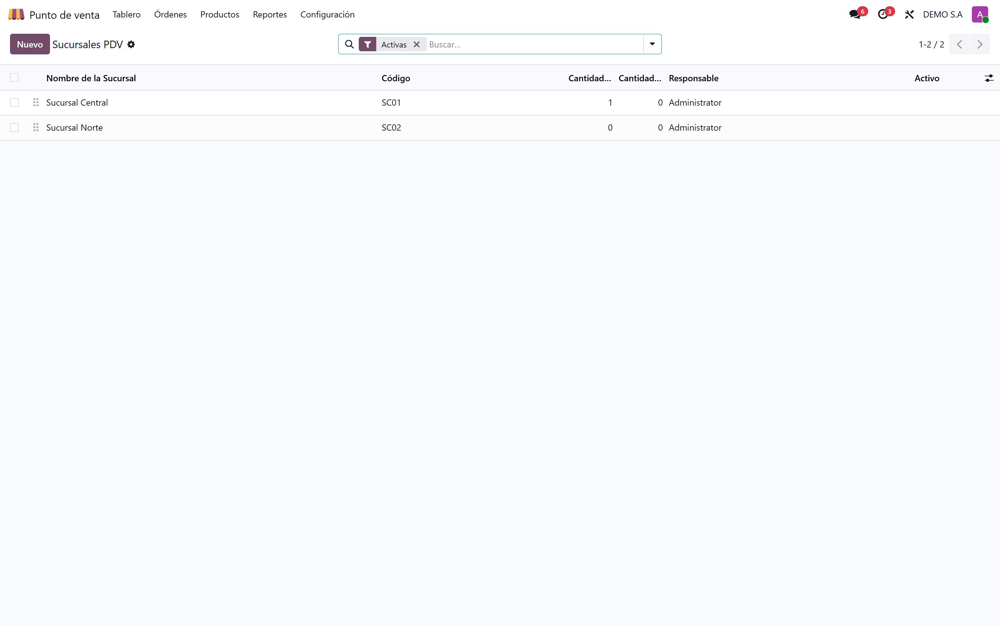
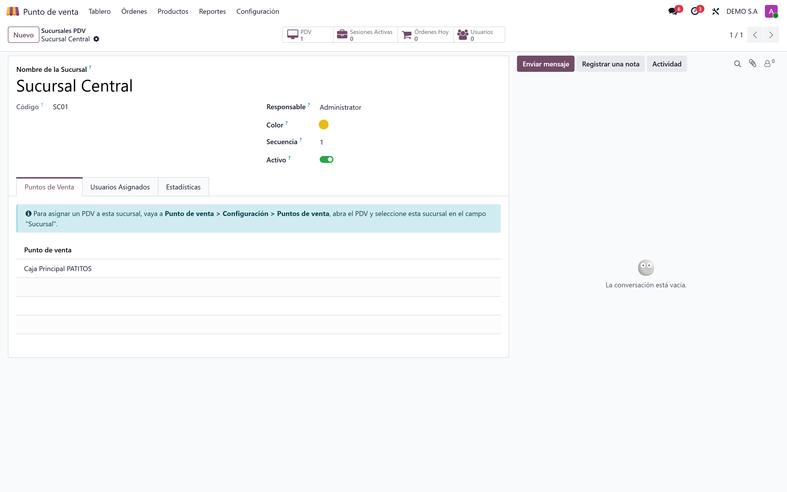
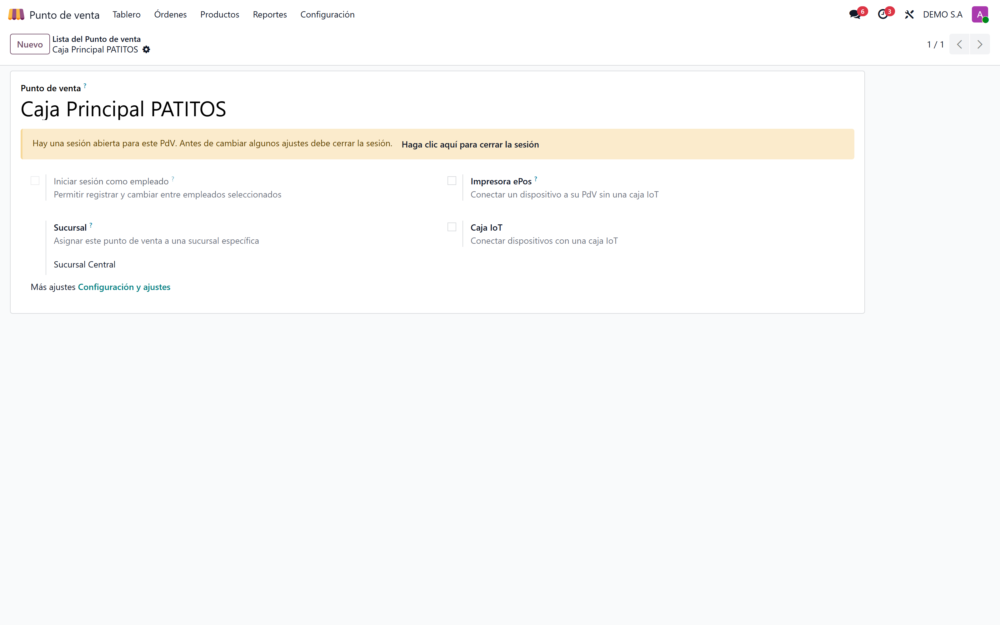
PDV por sucursal
Agrupa cajas y sesiones bajo la sucursal física a la que pertenecen.
Acceso restringido
Cada usuario solo ve las cajas, sesiones y órdenes de sus sucursales asignadas.
Sin tocar contabilidad
El control es de acceso operativo; la facturación y el inventario siguen centralizados.
Cobro de facturas pendientes en caja
Extiende la función «Saldar deuda» del POS: al cobrar la deuda de un cliente, muestra un popup con sus facturas pendientes para que el cajero elija exactamente cuál factura está pagando, en lugar de aplicar el pago de forma genérica.
Muestra número, total y saldo de cada factura, aplica el pago a la seleccionada y permite reimprimir el recibo — trazabilidad limpia entre el cobro de caja y la cuenta por cobrar.
Selección de factura
Popup con las facturas pendientes del cliente: el cajero elige cuál pagar.
Saldo a la vista
Número, total y saldo pendiente de cada factura antes de aplicar el pago.
Reimpresión de recibo
Vuelve a imprimir el comprobante del cobro cuando el cliente lo necesita.
Tecnología detrás del POS
¿Facturás electrónicamente desde el Punto de Venta?
Implemento la facturación electrónica CR en tu POS de Odoo: tiquetes y facturas en tiempo real, multimoneda, sucursales y cobro de pendientes. ¿Buscás la facturación de escritorio? Mirá Factura Electrónica Costa Rica.